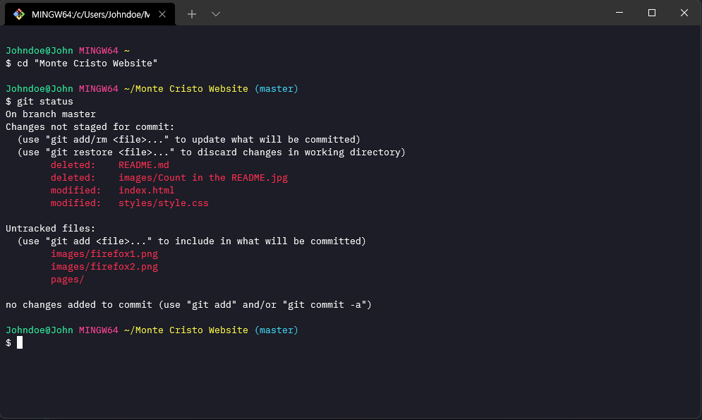

Windows Terminal

Download
Click here to download .zip file and unzip them
Install
- Start Windows Terminal and click on the down arrow symbol ˅ from menu bar. And you can see the settings menu. Or you can use Ctrl + , to open Settings directly.
- In the settings.json settings file for Windows Terminal, find the schemes section and paste the content of Monte-Cristo.json.
- Once the color scheme has been defined, it's time to enable it. Find the profiles section and add a colorScheme value to the default profile